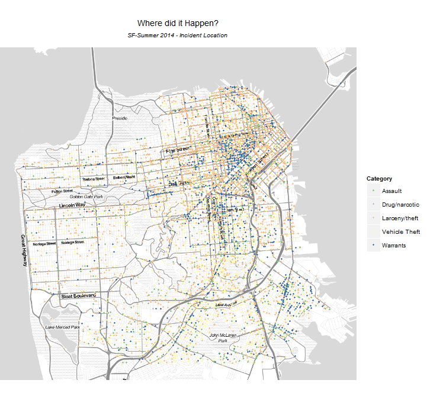

For Communicating Data Science Results course by Sivarajan Napoleon
This assignment is part of the Communicating Data Science Results Coursera MOOC course conducted by Univ of Washington
The intent of this assignment is to analyze criminal incident data from San Francisco, visualize patterns and, if possible, contrast and compare the patterns.
The end result of this assignment is to produce a blog-post-style visual narrative consisting of a series of visualizations interspersed with sufficient descriptive text to make a convincing argument.
The basic questions fathomed for this assignment and the possible Visual answers for those questions are in narrative presented below.
San FranciscoR-Studio Version 0.98.994 with the libraries ggplot2, devtools and others were used for this assignment. The crimeanalytics.html was created by-hand, typed out in TextPad and rendered as a PDF using NitroPDF.
The Answers to the questions has been visualized using Plots and Graphs, and the findings per city are as below.
San FranciscoThe data as visualized in RStudio paints an interesting picture, some of the main takeaway points:
San FranciscoThe First question about Crime Analytics is "What are the incidents?"
The Dataset variables Category, Descript and Resolution have to be analyzed to get the answers.
The highest frequency incident is Larceny/theft with 9,466, followed by Other Offenses (3,567) and Non-criminal (3,023).
In Crime Analytics when you know the type of incidents and their frequency, you want to know "What is the resolution for the incidents?"
The variable Resolution has 16 different levels.
The top resolution of incidents is None with 19,139, followed by Arrest, Booked (6,502) and Arrest, Cited (1,419).
The third question we want to know in Crime Analytics is "When did the incident happen?"
We puruse the data from DayOfWeek, Date and Time for the When Question.
The Day of the Week and the Hour provide most typical hours when the incidents happen.
During the week days the incidents occur more in the evenings (from 17 to 18 hours, to 20 hours, and a smaller concentration around 12 hours).
From Friday to the weekends, crime is concentrated in the evening and then at late hours, around 23 hours.
We could continue analysis by investigating the incidents by category or resolution as well as with location.
We always want to check "Where did it Happen?", the most crime-prone area.
Variables used to study this question are PdDistrict, Address, X and Y and Location.
Since the Lat-Long are available, it is possible to identify precisely the location of the incidents and relate to categories and periods. Larceny/theft and Warrants are more predominant in the bay area, while Vehicle Theft are spread all across the city.

To summarize, we analyzed the Crime incidents in San Francisco over the Summer of 2014. The number of incidents, type of incidents, their frequency, when do they happen most and where do they happen were all visually analyzed. We could do the same for the Seattle Data, using different Variable names.